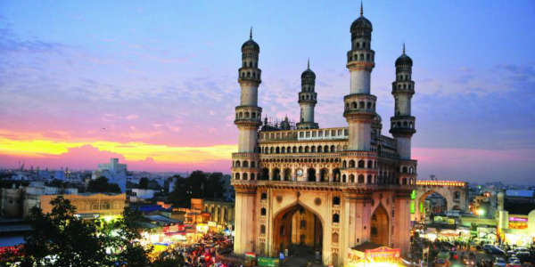
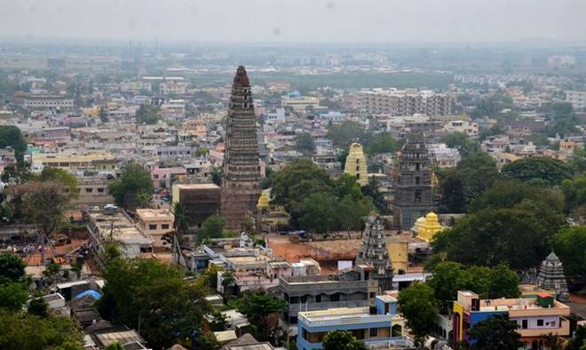

India's history and culture is dynamic, spanning back to the beginning of human civilization.
It begins with a mysterious culture along the Indus River and in farming communities in the southern lands of India. ...
By the end of the fourth millennium BC, India had emerged as a region of highly developed civilization.

In 1953 Andhra State was created from part of the Madras Presidency, the first state in India formed on a linguistic basis.
In 1956, Andhra State was merged with the Telugu-speaking area of Hyderabad State to form the state of Andhra Pradesh.
The original Sanskrit name (ancient Vedic culture) for Gunturwas Garthapuri.
The 'Agasthyeswara Sivalayam' in the old city ofGuntur is an ancient temple for Siva. It has inscriptions on two stones in 'Naga Lipi' (ancient script)
